Printed Wheelbarrow Walker
A small walking robot that pushes a wheelbarrow, driven by one TT gear motor. Two complete builds from one design: 11 parts printed on a 180 × 180 mm bed with no supports, or the same parts cut from 3 mm corrugated cardboard.
Assembly video
Turn the sound on: each move happens while the voice-over describes it. A claw gripper pushes the motor into the cradle can first, snaps the clip on, fits the crank, then the leg, hip peg and cap; then the battery holder goes in the tray, the wires run to the motor and the switch goes on, and it walks. Every move is checked so no part passes through another.
Step by step
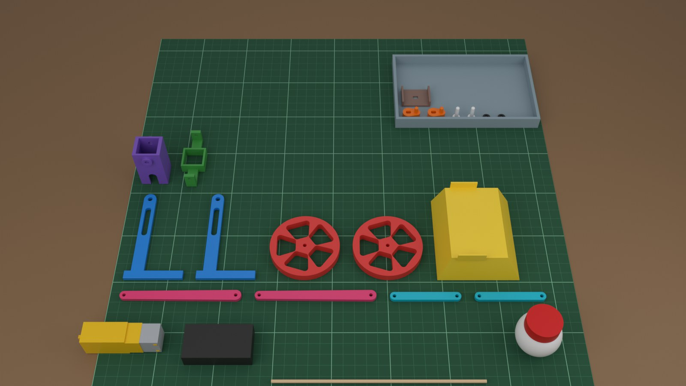
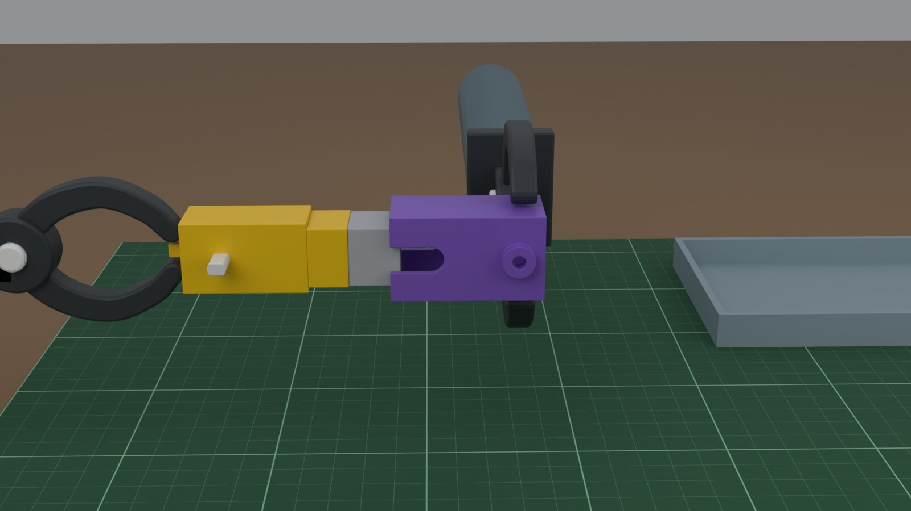
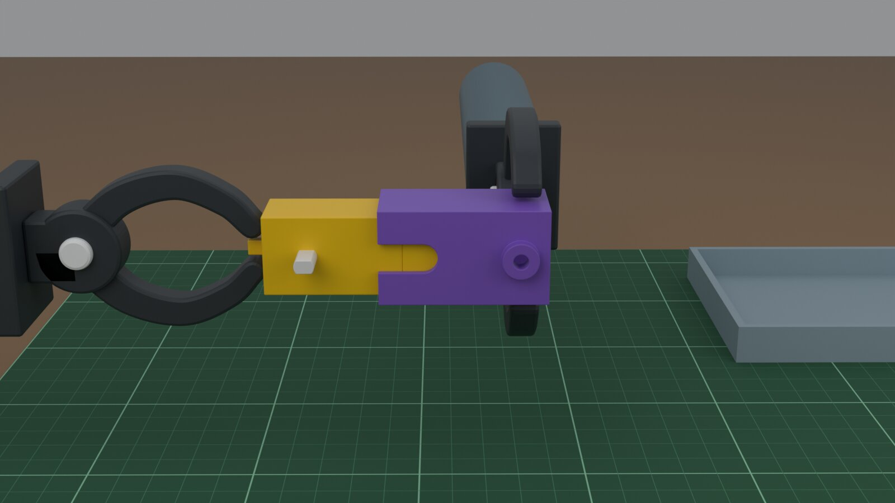
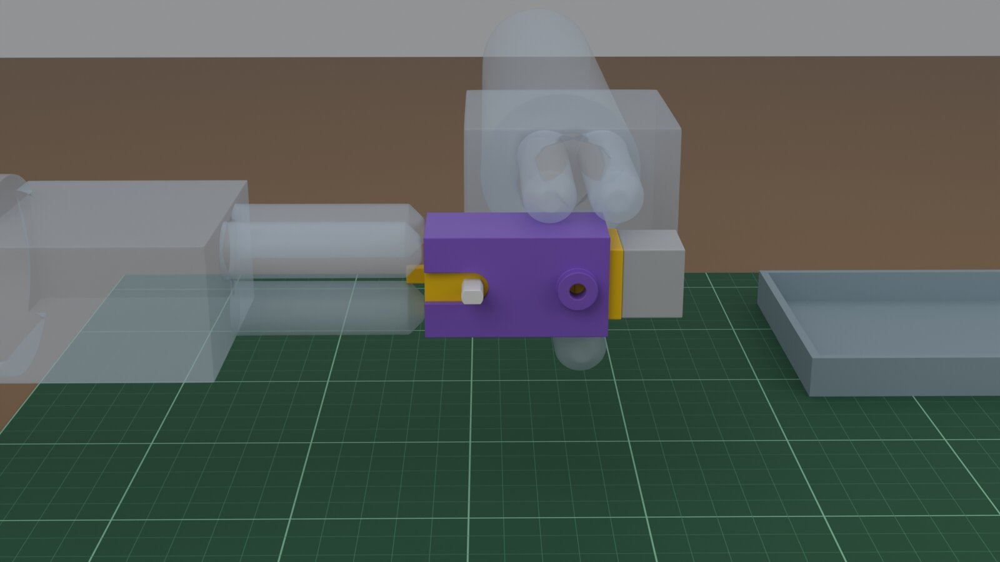
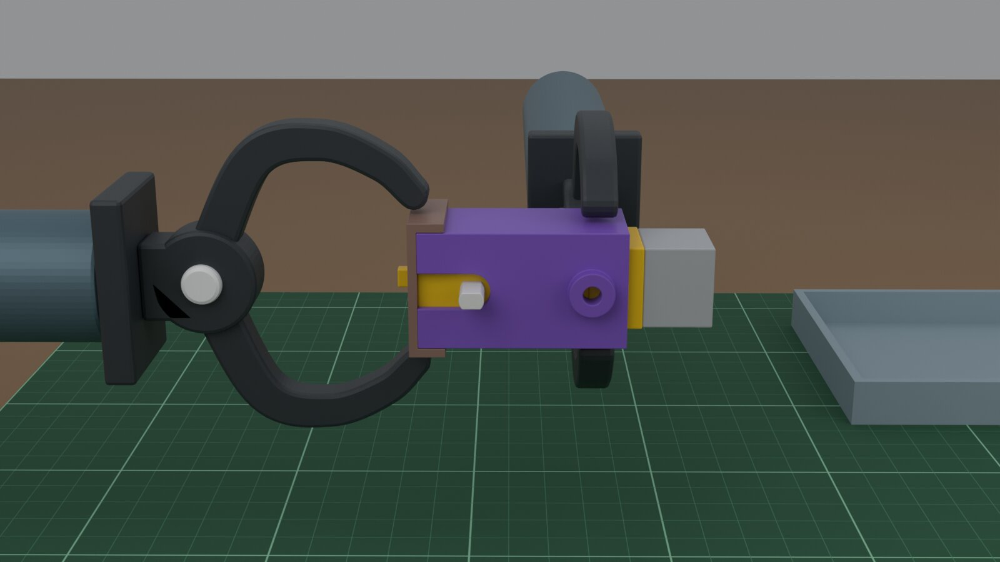
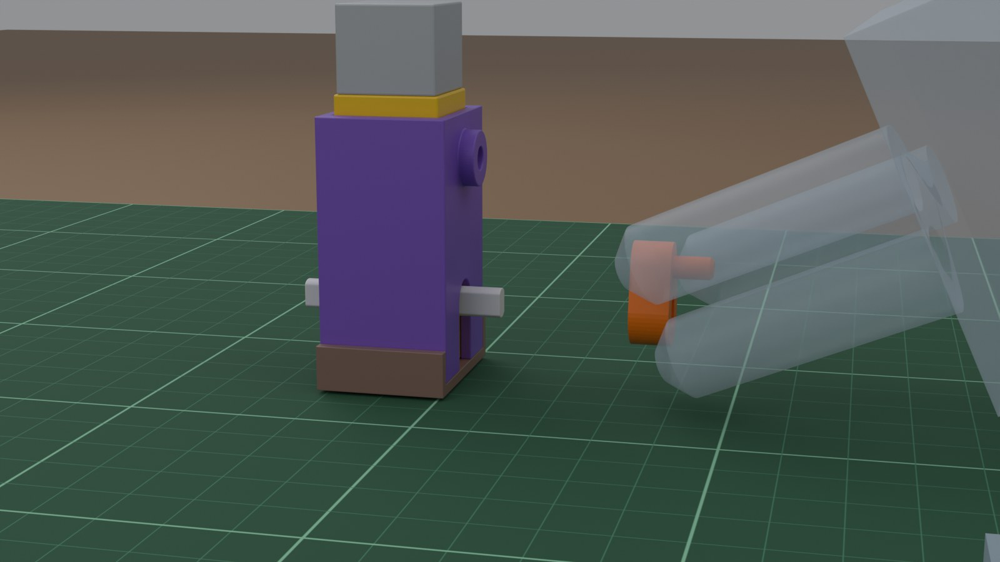
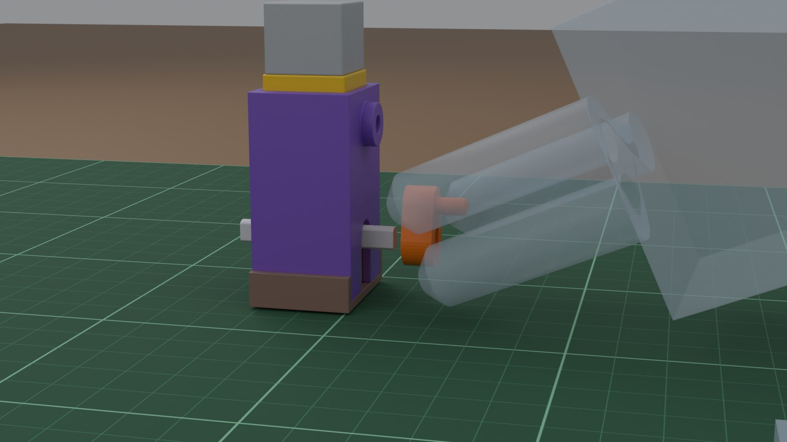
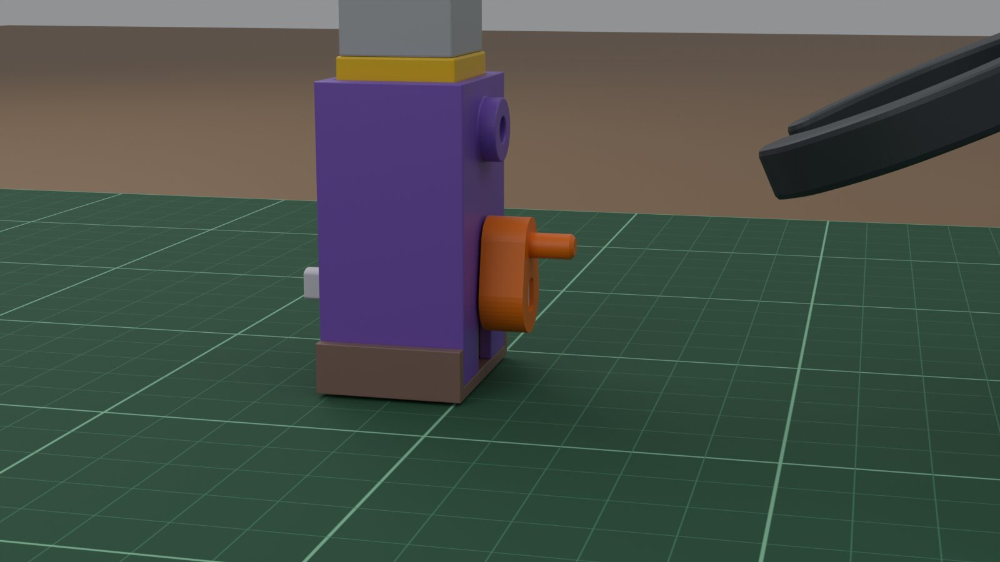
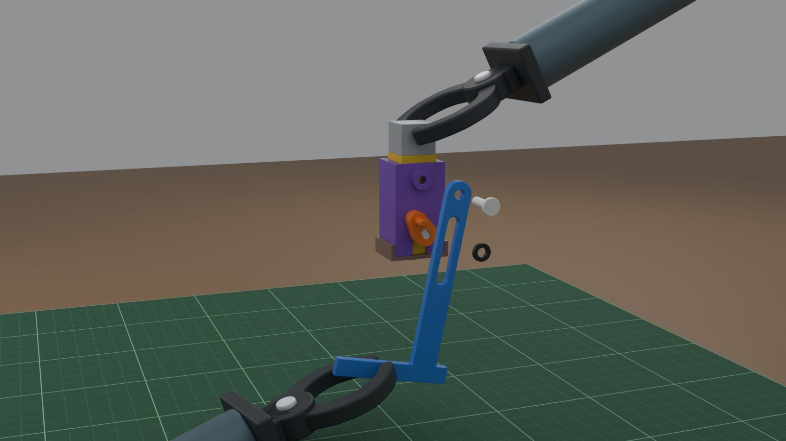
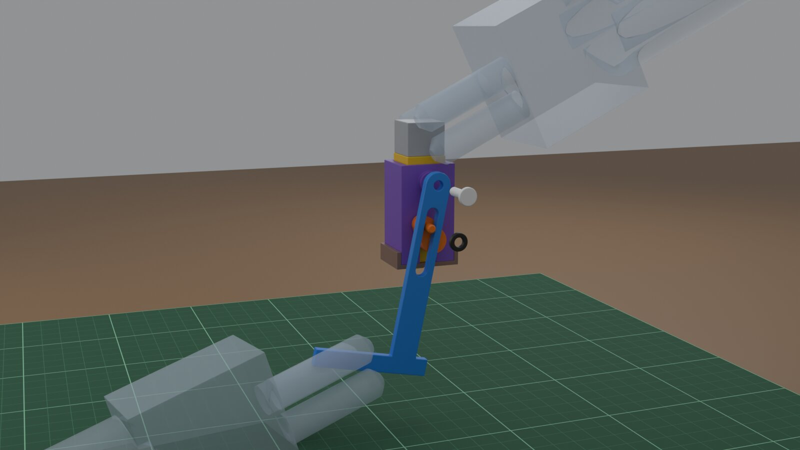
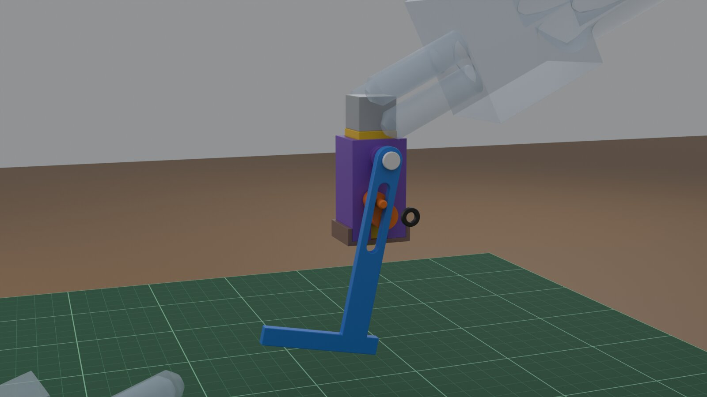
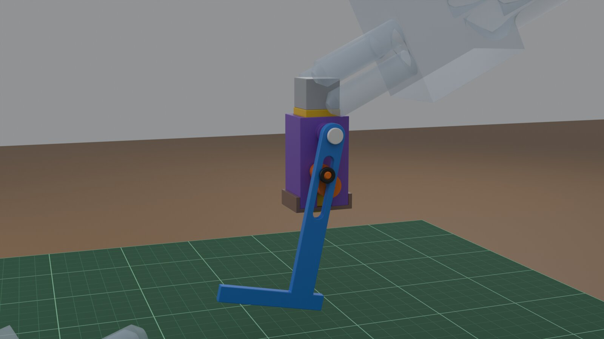
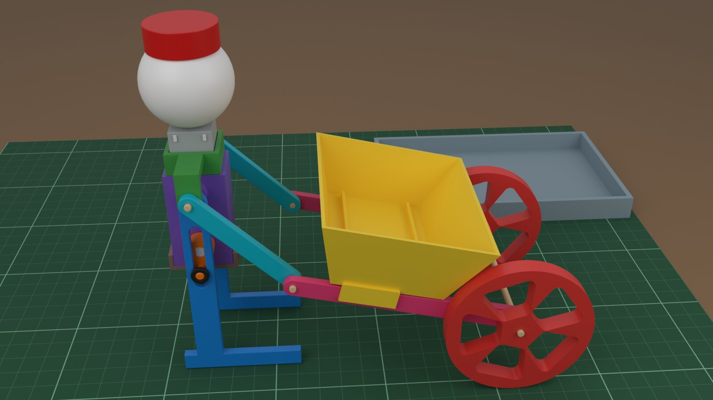
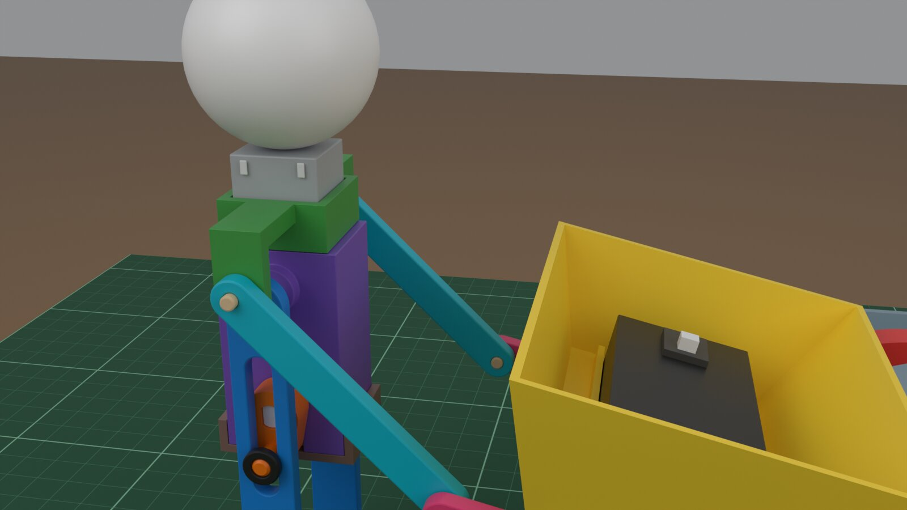
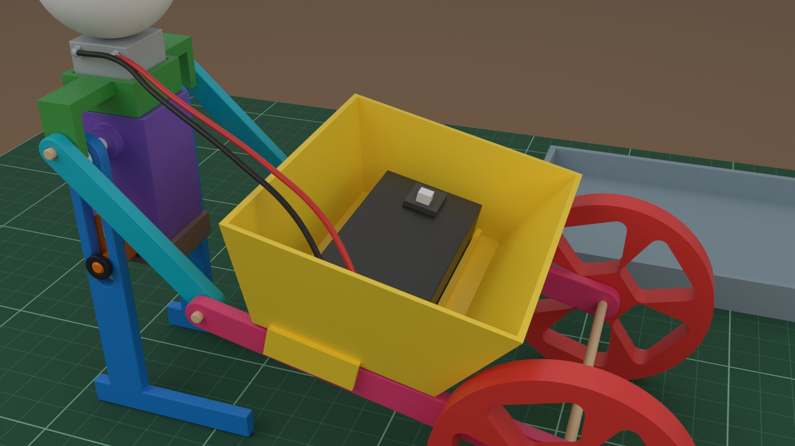
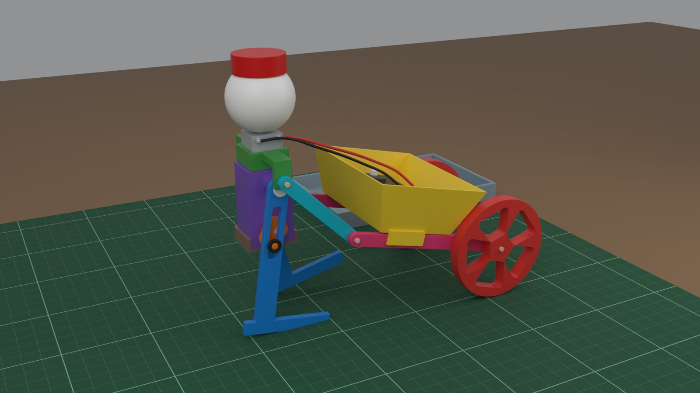
It walks
Pendulum legs driven by cranks 180° apart (8 mm crank, hip 26 mm above the shaft). Stride 54.2 mm, foot lift 4.3 mm.
Two builds, one design
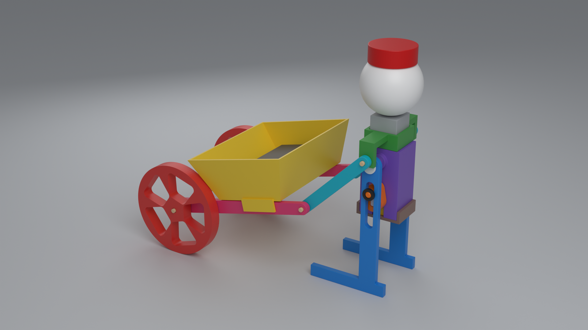
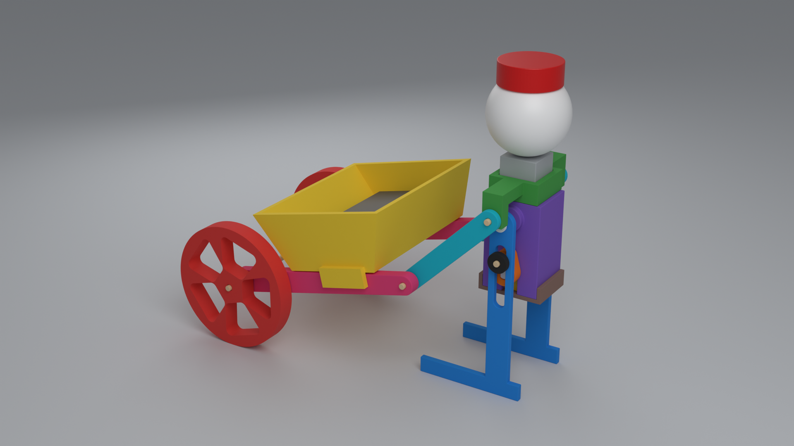
Parts
Click a part to turn it in 3D. Drag to rotate, scroll to zoom. ⬇ downloads the STL.
You also need
- A TT gear motor (double shaft, 3–6 V)
- A 2×AA battery holder with a switch
- A 3 mm bamboo skewer, a ping-pong ball and a bottle cap
Building with kids: a grown-up does the knife cuts, hot glue and soldering. The small parts (pegs, caps) are a choking hazard for under-3s.